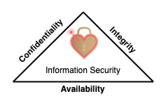

Can be exploited to elevate the privileges in the given system.
Still exists but no longer a zero day.
Affected all cloud providers, they needed to run firmware updates, updates provided by Intel that caused delays.
Daisy chaining
An attack in which hackers gain access to one network/device and then using it to access next networks/devices.
Steps
Hackers gain access to a device within your system/network
e.g. smartwatch, refrigerator, PC.
They move further by gaining access to next device in your network and then next and so on.
Potentially hacker owns the network in the end.
Example for hacking banks or similar
Go after person that has the most access.
Hack that persons home router as attack vector.
Because it has the least resistance compared to corporate network.
Corporate network: has corporate firewalls, IT stuff, policies etc.
Home router: Rarely updated, full of vulnerabilities.
They usually run down-sized linux operating system.
An attack vector is a method or pathway used by a hacker to access or penetrate the target system.
Scan devices that are connected to the router.
Can see communication (can be encrypted) but always sees ports, URLs, addresses being used.
E.g. mans PC, wifes PC, smart TV/refrigerator, his cell phone, wifes cell phone etc.
Attack with different attack vector options:
Change the DNS settings, you can set yourself as DNS.
Put his computer to DMZ to expose his PC for access from outside world.
Apply phishing, exploits to the operating system of the devices.
Get access to one of the systems
E.g. an Android phone. They have many vulnerabilities.
They don't get updates after a while.
If they exceed design limits e.g. when operating when it's hot outside, then the hardware flaws occurring causes exploitable software attacks such as Bitsquatting
Get access to
Information such as bank accounts, credit card details
After infecting one device, jump other devices in bank network if e.g. the mobile phone is also used in bank network.
Doxing
Finding and publishing someone's personally identifiable information (PII) for malicious reasons.
E.g. an individuals name, e-mail address or sensitive data of an organization.
E.g. confidential government files get leaked to the public.
Steps
Gather private and valuable information about a person/organization
E.g. photographs, SSN, social accounts, address...
Build a profile of target by learning more information e.g. through social media.
Misuse collected information for different reasons.
E.g. identity theft, stealing financial information to use, coercing their target's into doing something they don't want to
Bot
Contraction of "robot"
A software that can be controlled to execute predefined tasks.
Used by hackers to control the infected machines for malicious reasons.
Use-case
E.g. using a bot to control the computer and perform attacks on other computers
E.g. creating a botnet by infecting more machines
CIA triad
Also known as three principles of information security
Recognized widely as hearth (main focus) of information security

Should function as as goals and objectives for every security program